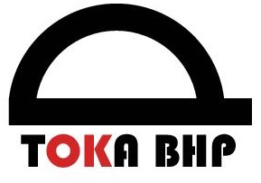

|  |
Toka BHP
tel. kom. 555-555-555
e-mail: biuro@tokabhp.pl
|
Zajmujemy się
1) Tworzeniem instrukcji na potrzeby Państwa firmy
- IBWR ( Instrukcja bezpiecznego wykonywania robót) Zgodnie wytycznymi Porozumienia dla bezpieczeństwa w budownictwie
- Ocena ryzyka dla zadania
- Instrukcję maszyn i urządzeń
- BIOZ
2) Oceną ryzyka zawodowego
3) Szkoleniami BHP
- szkolenia wstępne
- szkolenia okresowe dla wszystkich grup pracowniczych
- dodatkowe szkolenia warsztatowe BHP o tematyce do uzgodnienia
4) Doradztwem w zakresie odzieży roboczej, środków ochrony indywidualnej, bezpiecznej pracy
5) Kompleksową obsługa firmy pod kątem BHP
6) Reprezentowaniem Państwa firmy przed Inspekcją Pracy
7) Przeprowadzaniem audytów
8) Sporządzaniem dokumentów powypadkowych
TOKA BHP to ludzie, dla których Bezpieczeństwo Pracy jest nie tylko pracą,
ale przede wszystkim pasją i wielkim wyzwaniem.
Ponad 10 letnia działalność w branży budowlanej,
również u generalnych wykonawców Porozumienia Bezpieczeństwa w Budownictwie.
Absolwenci Wyższej Szkoły Zarządzania Ochrony Pracy w Katowicach.
Działamy na terenie województwa Śląskiego.
Zapraszamy do współpracy!